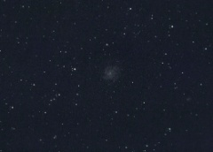

Deepsky (Messier) Objects


 would like permission to use your photo of M27 for possible use in the August segment of 'Tonight's Sky', a feature on HubbleSite and in our ViewSpace multimedia program. ViewSpace is distributed to over 200 schools and science museums around the country. Please let me know (asap !) how you would like the credit line to read. Thanks so much.
Lucy Albert, Space Telescope Science Institute
15/11/2010")

M1 The Crab Nebula (hover!)
M13 The Great Hercules Cluster
M27 The Dumbbell Nebula (hover!)
M31 The Andromeda Galaxy


M33 The Pinwheel Galaxy
M35 Open Cluster Gemini
M36+M37+M38 and Mars
M42 The Great Nebula in Orion + M43

.jpg "20081228 - 87X30s images at ISO800 - 300mm SMC Takumar lens
Hi, Chris.
We are in need of a better photo of M45 for our January 2011 issue of 'Tonight's Sky' and the one on your website fits the bill. May we have your permission to use it our presentation?
As always, due credit is given. Thanks,Lucy
Lucy Albert, CTSM - - Distribution & Exhibit Coordinator - Informal Science Education - Office of Public Outreach - Space Telescope Science Institute
November 29, 2010")
.jpg "20071210 - 56x30s images at ISO800 - 400mm lens")

M44 The Beehive Cluster
M45 The Pleiades (300mm) (hover!)
M45 The Pleiades (400mm)
M51 The Whirlpool Galaxy


M57 The Ring Nebula
M65+M66+NGC3628 The Leo Triplet
M76 The Little Dumbbell Nebula
M81 + M82

M101